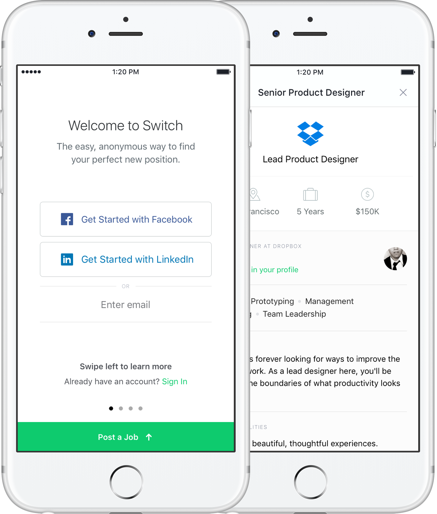

We partnered with New York startup Switch to make job searching and recruiting easy. Our work spanned across web and mobile platforms, covering consumer and admin experiences. Throughout the project we worked closely with the entire team to create a holistic experience that could grow with the brand.
Switch's user experience is very similar to Tinder. People seeking jobs can swipe right on the one's they're interested in, and left on the jobs they're not interested in. When a recruiter thinks it's a match, a conversation is started. Alongside as re-thinking this experience, we also designed an onboarding experience that made it easy to find or post a job.
For recruiters, Switch also wanted to build a web experience that lets you control and manage all of your jobs and potential candidates. We helped them re-design this, and also introduced messaging and commenting within teams.